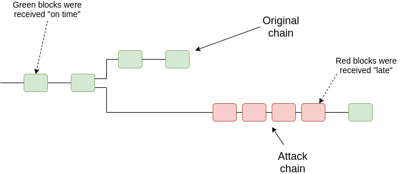
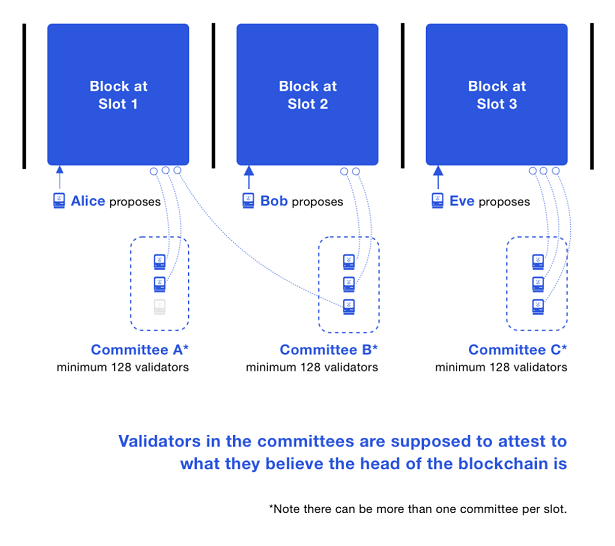

RSS Feed
RSS Feed
Freaking blockchains: How do they work?
27 May 2021Cryptocurrency hype is at its peak, blockchains are on every lips. Since I started writing this, Bitcoin & assorted cryptocurrencies hit multiple all-time highs then crashed 50%.
Besides all the sound and fury, I think I have something interesting and nuanced to say about blockchains and cryptocurrencies.
I also believe that to understand the topic, one has to understand the basics of the technology, more precisely than most articles make allowance for.
Contrary to popular belief, blockchain technology is not that complicated. I dare say it's even quite simple.
So, in this article I explain the technology. I will tell you what it does, but not what the practical applications are, nor whether I think the technology has a future, whether it's a scam, or whether cryptocurrency prices are justified. I will, however, tackle all these topics in a follow-up article.
What's a blockchain?
A blockchain is a decentralized ledger of transactions. It's a kind of permanent log: once a transaction makes it into the log, it will remain there forever. Note that the concept can be extended to log more than financial transactions, but we'll use transactions as an example in this write-up, where users can transfer digital coin currency, also called tokens.
What makes blockchains special is that they are truly decentralized in the sense that anybody can join the network that monitors and mirrors the state of the blockchain — such participants are called nodes. Some nodes additionally participate in the consensus process to verify the transactions that make it onto the ledger. In the proof-of-work scheme used by Bitcoin, such nodes are called miners. And again, everybody can become a miner. We'll also tackle the main alternative, proof-of-stake, later in this article.
A "blockchain" is called so because the ledger is composed of a chain of "blocks", each of which encodes many transactions. Miners in the network collect transactions, verify their validity, pack them in a block, then try to validate this block. In proof-of-work, this is calling mining the block (in proof-of-stake, it's simply called proposing or creating the block). Whenever a node mines/proposes a block that is accepted by the network, it receives a reward.
(Click to open bigger version in a new page. Image source: Bitpanda)
As an aside, a transaction is considered valid if it is signed by the cryptographic key associated with the source's address (a crypto address is a little bit like a bank account number), if it's legal with respect to the address' token balance, and if the transaction did not previously appear in another block.
Cases where an address spends the same tokens twice is called a double-spend. As we'll see in a subsequent article, this is the principal attack vector against blockchains. This is distinct from duplicating a transaction, which might still be legal with respect to balances, but if allowed, would allow miners to siphon off the funds from an address that previously sent them tokens.
To mine/validate a block, it is not sufficient to create and verify the block — it must also be accepted as part of the blockchain. This is achieved through a consensus protocol.
In computer science, we call a consensus protocol a protocol that lets a set of nodes make a decision that is eventually accepted by the whole network. This is typically based on some form of majority voting. We also know, to some extent, how to guard against malicious nodes who lie to try to get their own choice selected.
However, this only works if the network participants are pre-established. In an open network, a malicious actor could just create a huge number of nodes to get a de facto majority — this is called a sibyl attack. To tackle this issue, blockchains must make it "expensive" to validate blocks. In reality, validation must be profitable: that's the incentive for miners/validators to participate in securing the network. But when we say that validation should be "expensive", we mean it must be capital-intensive. Because it costs money to validate blocks, it becomes much more difficult to assemble enough mining or staking power to mount a sibyl attack.
In proof-of-work blockchains, miners compete against each other to be the first to validate a block. There is a sort of number-guessing contest going on based on expensive computations (we'll explain it shortly), and the winner gets to mine the block and collect a reward. Miners buy specialized mining devices to be able to run the expensive computations as fast as possible. Statistically speaking, if you control X% of the mining power, you'll get X% of the mining rewards.
The "number guessing game" in question is made computationally expensive through the use of cryptographic hash functions (details will follow). To the best of my knowledge, this is the reason for the crypto in cryptocurrencies. It could also refer to the use of cryptographic keys to sign transactions, but this is a fairly old technology whose use was already pervasive when blockchains were introduced.
In proof-of-stake, validators must lock some amount of on-chain currency (their stake). The protocol then selects which validator gets to validate the next block. If you control X% of the total stake, you'll be select with X% probability. Note that this is not the only way to implement proof-of-stake, but it is the simplest to understand, and it gives the right idea.
I haven't mentionned where these rewards come from. In both cases, they're a combination of both currency creation where the miner/validator might be granted some amount of newly minted tokens, and transactions fees paid by the users whose transactions end up on the block. Bitcoin famously has a supply limit, where eventually only transactions fees will remain.
Currently, most blockchains use proof-of-work, including #1 and #2 cryptocurrencies Bitcoin and Ethereum. A few minor blockchains use proof-of-stake, and Ethereum has planned to transition to proof-of-stake. We will now give more details about them, starting with proof-of-work.
Proof of Work - Hashing
In proof-of-work, mining is done by solving a cryptographic problem. In particular, miners have to calculate a valid hash for the block. You can think of a hash as a fingerprint for the block. More precisely, a hash is the result of applying a hash function to some data (here, the block). Such a fingerprint is really nothing else than a (potentially very large) number, encoded on 256 bits (which allows to represent 2^256 values, which is 1 followed by 77 zeroes).
For blockchains, we use a cryptographic hash function. Those have the requirement that they should be irreversible (it is impossible to guess the block content from the hash), and in general "look random" — it's very important that knowing the hash for a block does not give us any advantage in finding the hash for a very slightly different block. Finally, a cryptographic function should also be somewhat expensive to compute, so that it is difficult to guess the data (e.g. the block, or the password) that generated the hash.
Crypto Trivia 1: Did you know that most websites do not store your password? Instead they store a hash of your password. When you login, they hash the password you submit, and compare it to the hash they stored. That way, if the website is compromised, the attacker only gets the hash of your password. Since he can't invert the hash, your password is safe, and the attacker can't use the hash to log on other websites. ... Or at least that's what we'd hope. In reality, getting the hash makes it easier to guess a password through the use of rainbow tables, which is why the website should hash your password along with a salt.
Crypto Trivia 2: Since the block is much bigger than the hash (in Bitcoin's case, most blocks are 1MB and a hash is 256 bits), it means that there can exist many more different blocks than different hashes. This means that, by the pigeonhole principle, it is possible for two blocks to hash to the same value. This is fine here, and is fine for most uses of hashing. Just note that our "fingerprints" are not necessarily unique. However such a collision has a probability of 1/(2 followed by 59 zeros). It's pretty rare.
So proof-of-work consists of finding the hash of the block. Normally this is an easy task. But in blockchains it involves a guessing component. The block's data contains all the transactions, but also a reference to the previous block (actually, the hash of the previous block) and a random number called nonce.

(Image source: Scott Logic)
The problem proof-of-work has to solve is as follows:
nonce = random 32 bit number
h1 = hash(block including nonce)
h2 = hash(h1 concatenated with nonce)
... such that h2 > difficulty
So we pick a nonce and hash the block which contains this nonce. Then we append the nonce to this first hash, and hash that to get a second hash. The problem is solved only this second hash is higher than a set number, called the difficulty. If the condition is not fulfilled, the process starts again with another nonce, until the problem is solved or someone else mined a block — in which case we need to update the previous block's hash, as well as the list of transactions.
The difficulty is set by the protocol, and determines how difficult it is to solve the problem. For instance, Bitcoin adjusts it so that the average time between each mined block remains around 10 minutes. Because a hash is a 256-bit string, it can be interpreted as a number between 0 and 2^256. So if the difficulty was 3/4 * 2^256 and hashes are uniformly distributed (which a cryptographic hash function should ensure), this would exclude 3/4 of the valid hashes. In reality, the difficulty is much much higher than that. A bitcoin mining machine that can perform about 100 tera-hash per second (*) costs about 4000$!
(*) That's 100 trillion — or about 2^47 — hashes per second. I'm not sure if that number designates actual hash function calls or attempted nonces.
Math Trivia: Assuming the difficult is indeed 3/4 * 2^256, how many nonce would we have to try to find a valid hash, on average?
I found this difficult to answer, made some hand calculation, and found the numbers I came up with (between 1 and 2) difficult to believe. But in fact, here's the answer to a similar problem that gives a formula. The answer is 1.66. Unintuitively, you still have one chance out of three not to have found a valid hash after four tries! Math, man.
So proof-of-work mining takes a lot of computational power to perform all these hashes. This costs a lot of money, both as upfront machine costs and as energy costs. This is all by design.
Now, consuming a lot of energy is not ideal in a world where we're trying to stop global warming. At the time of writing, the energy expended annually on mining bitcoin is greater than the annual energy expenditure of Sweden, and account for 0.6% of the globe's total energy production. I've also read that every Ethereum transaction currently consumes enough energy to power an average household for 24 hours.
This can be caveated a little bit by saying that miners are after cheap energy, and excess energy is the cheapest energy. It's also possible for miners to build renewable energy plants to power their mining rigs — though this also comes with an environmental cost.
The energy consumption might not turn out to be a deal-breaker, but it's far from ideal. That's one of the issues addressed by proof-of-stake. But first, let's talk about consensus.
Proof of Work - Consensus
Okay, so miners compete in a hashing contest and, generally speaking, the first miner to find a valid nonce for his block "wins". Now we need to explain how that happen, i.e. how this valid block is disseminated and eventually accepted on the network.
In a simple scenario, the winning miner sends the block to all the other nodes he knows. These will verify that the block is valid: all the transactions have valid signatures, there are no double-spends, and the hash of the block satisfies the difficulty requirement. Once this is done, they further disseminate the block, and they append it at the end of their local chain. If the node is a miner, he will also restart its mining efforts by creating a new candidate block — the block he is currently attempting to mine does include the hash of a block that is no longer the last in the chain, as well as transactions that might have already been included in the block submitted by the winning miner.
At this point, one could have a security question: what prevents miners from completely ignoring blocks from their competitors in an attempt to mine their own block? There is a neat game-theoretic incentive not to do this: If you assume everyone else is honest, they will append this competitor block to their chain. That means that even if you manage to mine your alternative block, other nodes will reject it because it does not contain the hash of what they consider to be the latest block in the chain (the block submitted by your competitor). What if everyone cheats? We'll explain later, but there is no incentive to do this, as that makes all the profits go to the biggest miner.
Let's tackle the hard case: what if two miners mine a valid block at more or less the same time? Only one of the two blocks can win, since they include the hash of the same previous block, and their set of transactions might overlap.
In this case, the rule used by nodes is to always favor the longest chain. Of course, initially, the two blocks create two competing chains of equal length. Miners will have to decide which block to use as base for the next block they will attempt to mine (most likely they will select the block they saw first, reasoning that other miners are more likely to also have seen this block first — though that might not be the case because of network delays). Once a miner comes up with a valid block on one of the two chains, that chain gains the upper hand, and everyone converges on the same chain. Of course, it's possible for the scenario to repeat and the two chains to grow at about the same time, but this is very unlikely and grows more unlikely as the competing chains grow. Remember that the Bitcoin protocol adapts so that a new block is mined on average every 10 minutes: it should be rare for two blocks to be mined mere seconds away from one another, and it will be exponentially rarer for that to happen multiple times in a row.
This longest-chain rule is also why it is irrational for miners to just ignore other blocks: if everybody mined their own chain, the largest miner would always be able to overtake the others with a longer chain, and so all the non-mining nodes would converge on that chain.
The longest-chain rule is not infaillible: if an entity can get control of 51% of the mining power, they're able to mount a 51% attack which allows them to double spend. We'll talk about those in details in a subsequent article. Note that 51% attacks are at least fairly easy to spot on non-anonymized blockchains (which is most of them).

Above, a schematic representation of a 51% attack, where the attacker conceals his mining and then release his blocks all at once to overtake the main chain. (source: Vitalik Buterin)
Proof of Stake
As we said earlier, proof-of-stake is another scheme to make validating blocks capital-intensive enough so that it's impractical for any single actor to dominate the network, and impossible to mount a sibyl attack.
In proof-of-work, the hardware and energy costs make mining capital intensive. In proof-of-stake, we simply have validators put money on the line directly. And because cryptocurrencies are essentially money, that's rather simple.
In proof-of-stake, validators engage a certain amount of currency, their stake, which becomes locked for as long as they participate in the proof-of-stake mechanism.
The incentive structure is identical to proof-of-work. If you control 10% of the mining power, you should validate 10% of the blocks and get 10% of the mining rewards. Similarly, if you control 10% of the total stake, you should do 10% of the verification work and you should get 10% of the validation rewards. The difference is that instead of using a hashing contest, the protocol must determine how to distribute rewards to validators according to this distribution.
There are multiple ways to go about this, but the simplest is to use a pseudo-random scheme to select the next validator that will create a block. As an illustration, imagine that we filled an urn with 100 balls. On each ball the name of a validator is written, and each validator gets as many balls as his percentage of the total stake (of course in reality we need to accommodate many more validators and very fine-grained fractions). Then we use some data from the block (we need to make sure validators can't easily manipulate it), run it through a cryptographic hash function, and use the resulting hash to select a ball from the urn. The validator whose name is written on the ball gets to create the next block, and gets the validation reward.
That's not quite enough. Other validators need to cosign on the block, otherwise the block's creator could double-spend, or even include transactions without a valid signature. The simplest scheme here is to have all validators verify each block, and to require a quorum of agreement (e.g. a simple majority, or a 2/3 majority) to validate the block. We can't require consensus, because that would open the protocol to Denial-of-Service (DoS) attacks, and some validators might have temporary availability issues. If having every validator vote for every block is impractical, we can also form committees to validate individual blocks. Care must be taken that the validators are randomized properly and that committees are large enough to minimize the probability that all validators in the committee are controlled by the same entity. It is commonly required that this probability should be infinitesimal for validators controlling about 30% of the stake, and ideally up to 50%.

Pictured above: committees in the Ethereum beacon chain. Image source: ethos.dev.
There's another issue: what if the validator designated to create the block doesn't answer? We must avoid stalling the chain in that case. One solution is to assign blocks to time slots. If the designated validator does not propose a block during its timeslot, the opportunity is lost and another validator gets to propose a block that will follow the previous valid block.
Distributed Systems Trivia: The above is not as easy as it sounds, even if we assume that nodes are able to get highly accurate time information outside of the blockchain (for instance using the NTP protocol). This is due to network delays, which makes the timeslot boundaries blurry. Some nodes may consider a proposed block to be within its timeslot while others may not. Therefore, the protocol must take care to handle these boundary conditions so that the network always converges. It must also avoid unduly penalizing honest actors because of network latency.
If you want to avoid relying on out-of-chain time information, things get even more difficult.
Nevertheless, we'd like to avoid the scenario where a block is skipped, if only for reasons of throughput (how many transactions get validated each second). Ethereum proof-of-stake incentivizes validators to be responsive by imposing a fine on the stake of absentee validators.
That's more or less how proof-of-stake works. Unlike proof-of-work, there is a lot of disparity between the various proposed proof-of-stake designs. This article offers only a high-level overview, and elides a lot of the details. For instance, we didn't even talk about how stakes can be confiscated ("slashed") when a validator is caught attempting to cheat.
These missing details are best examined in the light of potential attacks against the protocol, which we will examine in a subsequent blog post.
Coda
In this article, I presented an incomplete yet detailed technical overview of the proof-of-work and proof-of-stake protocols used to implement most blockchains, including the Bitcoin and Ethereum blockchains.
The most important take-away is that blockchains are distributed ledgers built on top of a network that is open to everyone — this is their main selling point. Because of this, they must guard against sibyl attacks by making validation capital-intensive so that any single actor is unlikely to control a majority of the validation capacity. Proof-of-work makes mining capital-intensive by making validation computationally expensive, while proof-of-stake has validators put money (in the form of crypto tokens) on the line directly. Both methods must contend with a series of challenges that involve concerns from distributed systems, security, and game theory.
Stay tuned for further posts. Next post will take a step back and look at the potential and applications of blockchain technologies. A subsequent post will take a look at the security model and potential attacks against proof-of-work and proof-of-stake. See you next time!